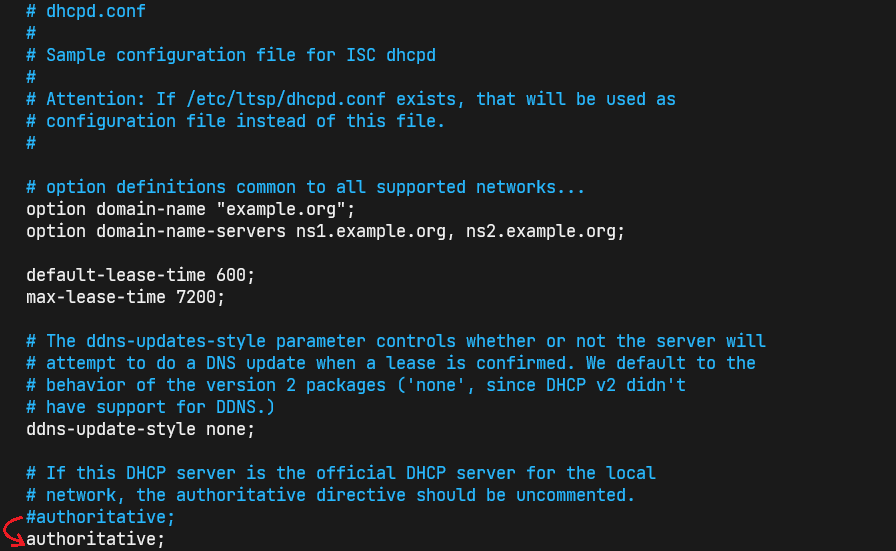
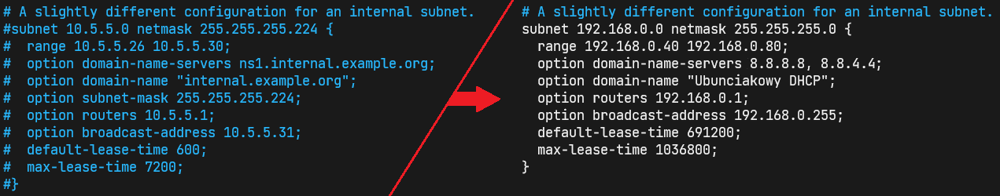

ADMINISTRACJA SYSTEMAMI OPERACYJNYMI / Dynamiczna konfiguracja hostów (DHCP) - isc-dhcp-server
Dynamiczna konfiguracja hostów (DHCP) - isc-dhcp-server (Dla klientów Windows i Ubuntu)
Zainstaluj isc-dhcp-server : Czestym rozwiązaniem błędów przy instalacji pakietów jest aktualizacja listy repozytorjów: Poniżej widnieje moja aktualna konfiguracja interfejsów msieciowych.
Sprawdź nazwy swoich kart oraz czy ich status wskazuje na to, że są
włączone.
Dodaj interfejs karty sieciowej do nasłuchu po nazwie w pliku
"isc-dhcp-server".
Wyknaj kopię pliku "dhcpd.conf". Następnie otwórz go dowolnym
edytorem tekstu, w moim przypadku nano.
Napoczątku usuń # z lini authoritative, aby ten serwer
DHCP stał się autorytatywny.
Poniżej widnieje moja aktualna konfiguracja interfejsów msieciowych.
Sprawdź nazwy swoich kart oraz czy ich status wskazuje na to, że są
włączone.
Dodaj interfejs karty sieciowej do nasłuchu po nazwie w pliku
"isc-dhcp-server".
Wyknaj kopię pliku "dhcpd.conf". Następnie otwórz go dowolnym
edytorem tekstu, w moim przypadku nano.
Napoczątku usuń # z lini authoritative, aby ten serwer
DHCP stał się autorytatywny. Definicja z słownika polskiego PWN może pomóc w lepszym zrozumienu:  Skrolując dalej "dhcpd.conf" napotkasz na zahastagowany fragmęt konfiguracji DHCP. Zmodyfikuj go tak jak na poniższym obrazie:  Zrestartuj usługę "isc-dhcp-server" a nastepnie sprawdź jej status. Uruchom Ubuntu i Windows'a. Jeżeli interfejsy są ustawione na automatyczny nowe adresy powinny być przypisane, można także recznie wyłączyć i włączyć interfesy sieciowe. Poniżej przedstawiam jak zrobić to za pomocą komend:
Ubuntu:
sudo dhclient -r -- zwalnia aktualny adress do puli adresów serwera DHCP.
sudo dhclient -- pobiera nowy adress do puli adresów serwera DHCP.
Windows:
ipconfig /release -- zwalnia aktualny adress do puli adresów serwera DHCP.
ipconfig /renew -- pobiera nowy adress do puli adresów serwera DHCP.
Sprawdź listę klientów / host'ów dzierżawiących adresy z puli serwera DHCP Do konfiguracji DHCP dopisz grupe stałych adresów IP, dodając do niej rezerwacje po adresach MAC dla Ubuntu i Windowsa. Zrestartuj usługę "isc-dhcp-server", następnie zweryfikuj poprawność przypisania adresów na systemach Ubuntu i Windows.